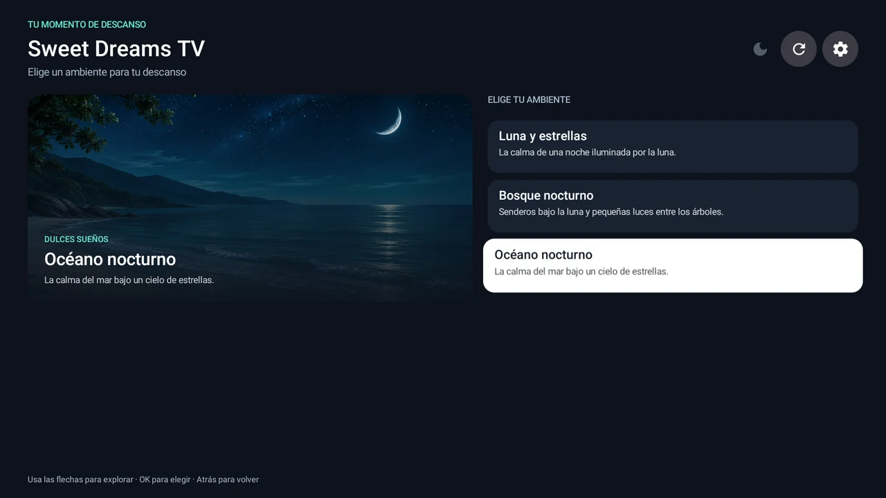
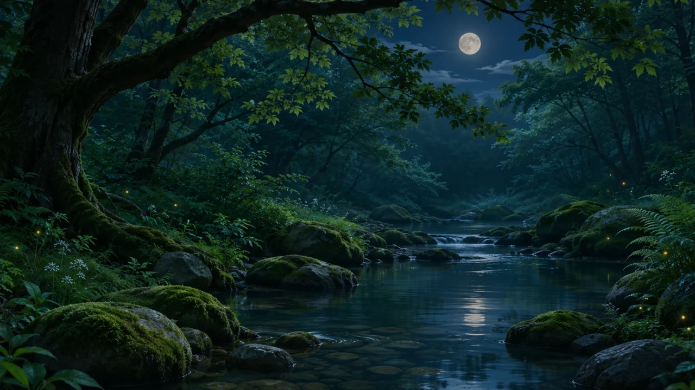
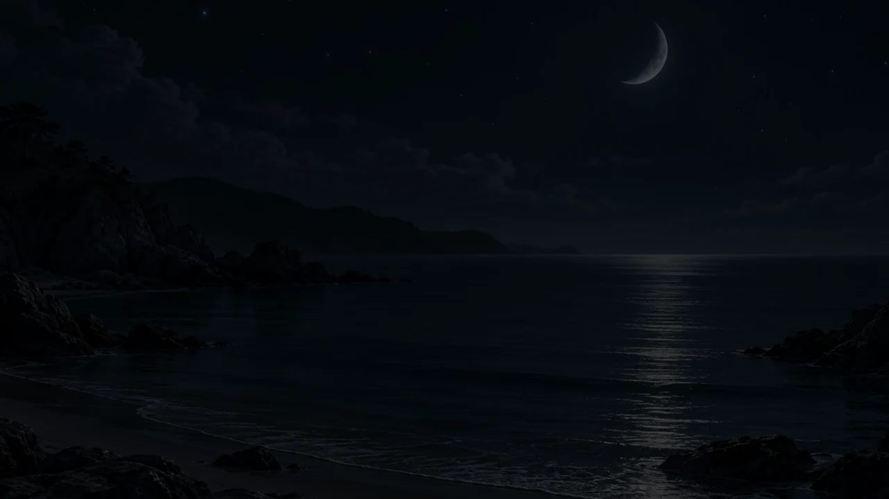

Android TV · QuirogaJ
Sweet Dreams TV
Convierte tu televisor en un paisaje nocturno. Elige un bosque, un cielo estrellado u otro ambiente de baja luminosidad para acompañar el descanso.
Características
Ambientes descargables
Explora el catálogo con el mando y descarga ambientes gratuitos o premium. Una vez descargados y, si corresponde, verificada la compra, puedes reproducirlos sin conexión.
Sesiones a tu ritmo
Ajusta la duración, el intervalo entre imágenes y las transiciones. Puedes activar o silenciar el sonido en los ambientes que lo incluyen.
Suspensión opcional
En dispositivos compatibles, la app puede solicitar el bloqueo de pantalla al finalizar el temporizador si habilitas el servicio de accesibilidad. El televisor puede permanecer encendido.
Galería



Disponibilidad
Para televisores y cajas con Android TV compatibles. La aplicación aún no está publicada en Google Play. La edición prevista incluye ambientes premium mediante compras únicas.